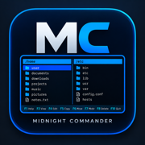

Midnight Commander for macOS
A free, open-source rewrite of Midnight Commander
in Swift/SwiftUI - the same two-panel layout, the same F-key shortcuts, the same
keyboard-first workflow, as a real native macOS app instead of a terminal program.
No Homebrew, no mc install, no terminal window required.
How it works
Every screen mirrors the original terminal layout: a top menu row, two file panels side by side, and a numbered button row at the bottom for the F-keys - rebuilt with real SwiftUI windows, a native macOS menu bar, and actual mouse/trackpad support on top of the keyboard-only original.
Left File Command Options Right /Users/pacelli/projects /Users/pacelli/tmp .. .. mc-gui backup.zip opendisplay-android notes.txt opendisplay F1Help F2Menu F3View F4Edit F5Copy F6Move F7Mkdir F8Delete F10Quit
Installation
Unsigned development build for now - right-click the app and choose Open on first launch to get past Gatekeeper.
Drag-to-Applications DMG, built directly from source by GitHub Actions on every release.
Download the DMGPrefer to build it yourself? Build from source with Swift Package Manager ↗
Features
Built and tested against the classic mc workflow, not a spec sheet.
Left/File/Command/Options/Right menu bar and the numbered F1-F10 button row, just like the terminal original.
F3/F4 open a native text/hex viewer and a real text editor with heuristic syntax highlighting - no external app needed.
Per-file progress, byte counts and transfer speed, a working Cancel mid-copy, and an explicit Background option that runs silently - same as the original.
Progress runs in an independent, non-modal window - keep browsing and working in both panels while a large transfer finishes.
Drag a file, folder, or the current marked selection from one panel and drop it on the other - the same F5 confirmation dialog always appears first, nothing copies silently.
Open, Select/Deselect, Zip, Edit, Delete, and Show Info (size, permissions, dates, recursive folder size) on any file or folder.
Double-click the path bar to jump straight to a directory - type a path or pick it from a live, lazy-loaded directory tree.
Save frequent directories, and define your own shell commands with %f/%d/%D macros, run against the current file or panel.
Per-panel navigation history, sort by name/size/date/type, and a hidden-files toggle - all reachable from the keyboard.
Portuguese (Brazil), Portuguese (Portugal), English and Spanish - the app follows your Mac's System Language, no picker needed.
Nothing phoned home. Everything runs and stays on your Mac.
Compare
For people who miss keyboard-driven, dual-pane file management.
| Midnight Commander | Finder | Commander One | |
|---|---|---|---|
| Price | Free | Free | Paid (Pro) |
| Open source | GPL-3.0 | No | No |
| Dual-pane | Yes | No | Yes |
| Full keyboard workflow (F-keys) | Yes | Limited | Yes |
| Account required | No | No | For Pro features |
FAQ
No. The original GNU Midnight Commander is a
terminal (ncurses) application. This is an independent, from-scratch rewrite in Swift/SwiftUI
that reproduces its classic dual-pane layout, F-key shortcuts and keyboard-driven workflow as
a native macOS app - no terminal or Homebrew/mc install required.
No. It's a regular native macOS .app with real windows, a native menu bar, and
Dock/Finder integration - it just happens to be entirely keyboard-driven, like the original.
Portuguese (Brazil), Portuguese (Portugal), English and Spanish, matching whatever language macOS itself is set to (System Settings → General → Language & Region) - no in-app language picker needed.
Not yet - it's an unsigned development build. On first launch, right-click the app and choose Open (instead of double-clicking) to get past Gatekeeper's warning.
GPL-3.0. Open source, free to use including commercially; distributed modified versions must remain open source under the same license.
Contribute
Bug reports and PRs go on the GitHub repository, which also has the full build instructions and architecture notes.